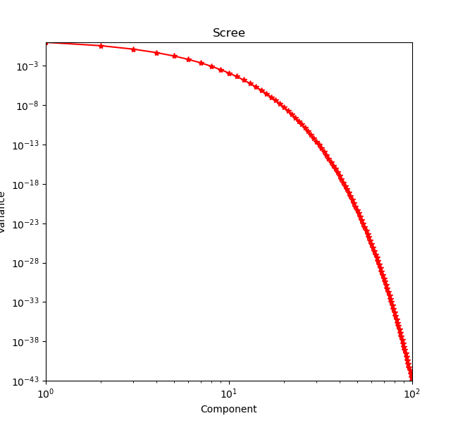
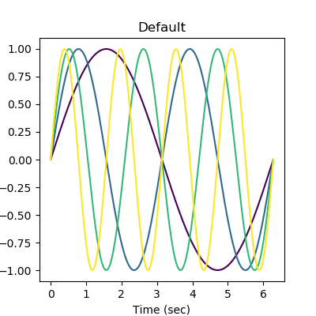
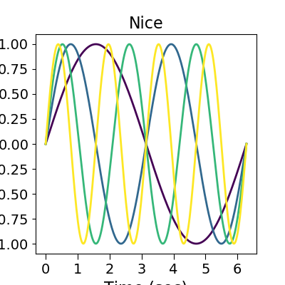

Note
Click here to download the full example code
04. Plotting utilities¶
Suhas Somnath
8/12/2017
This is a short walkthrough of useful plotting utilities available in pyUSID
Introduction¶
Some of the functions in pyUSID.plot_utils fill gaps in the default matplotlib package, some were
developed for scientific applications, and others were developed specifically
for handling Universal Spectroscopy and Imaging Data (USID) main datasets. These functions have been developed
to substantially simplify the generation of high quality figures for journal publications.
# Ensure python 3 compatibility:
from __future__ import division, print_function, absolute_import, unicode_literals
import numpy as np
from warnings import warn
import matplotlib.pyplot as plt
import subprocess
import sys
def install(package):
subprocess.call([sys.executable, "-m", "pip", "install", package])
# Package for downloading online files:
try:
import pyUSID as usid
except ImportError:
warn('pyUSID not found. Will install with pip.')
import pip
install('pyUSID')
import pyUSID as usid
1D plot utilities¶
plot_curves()¶
This function is particularly useful when we need to plot a 1D signal acquired at multiple locations. The function is rather flexible and can take on several optional arguments that will be alluded to below In the below example, we are simply simulating sine waveforms for different frequencies (think of these as different locations on a sample)
x_vec = np.linspace(0, 2*np.pi, 256)
# The different frequencies:
freqs = np.linspace(0.5, 5, 9)
# Generating the signals at the different "positions"
y_mat = np.array([np.sin(freq * x_vec) for freq in freqs])
usid.plot_utils.plot_curves(x_vec, y_mat)
Frequently, we may need to compare signals from two different datasets for the same positions The same plot_curves function can be used for this purpose even if the signal lengths / resolutions are different
x_vec_1 = np.linspace(0, 2*np.pi, 256)
x_vec_2 = np.linspace(0, 2*np.pi, 32)
freqs = np.linspace(0.5, 5, 9)
y_mat_1 = np.array([np.sin(freq * x_vec_1) for freq in freqs])
y_mat_2 = np.array([np.cos(freq * x_vec_2) for freq in freqs])
usid.plot_utils.plot_curves([x_vec_1, x_vec_2], [y_mat_1, y_mat_2],
title='Sine and Cosine of different resolutions')
plot_line_family()¶
Often there is a need to visualize multiple spectra or signals on the same plot. plot_line_family is a handy function ideally suited for this purpose and it is highly configurable for different styles and purposes A few example applications include visualizing X ray / IR spectra (with y offsets), centroids from clustering algorithms
x_vec = np.linspace(0, 2*np.pi, 256)
freqs = range(1, 5)
y_mat = np.array([np.sin(freq * x_vec) for freq in freqs])
freq_strs = [str(_) for _ in freqs]
fig, axes = plt.subplots(ncols=3, figsize=(12, 4))
usid.plot_utils.plot_line_family(axes[0], x_vec, y_mat)
axes[0].set_title('Basic line family')
# Option suitable for visualiing spectra with y offsets:
usid.plot_utils.plot_line_family(axes[1], x_vec, y_mat,
line_names=freq_strs, label_prefix='Freq = ', label_suffix='Hz',
y_offset=2.5)
axes[1].legend()
axes[1].set_title('Line family with legend')
# Option highly suited for visualizing the centroids from a clustering algorithm:
usid.plot_utils.plot_line_family(axes[2], x_vec, y_mat,
line_names=freq_strs, label_prefix='Freq = ', label_suffix='Hz',
y_offset=2.5, show_cbar=True)
axes[2].set_title('Line family with colorbar')
plot_complex_spectra()¶
This handy function plots the amplitude and phase components of multiple complex valued spectra Here we simulate the signal coming from a simple harmonic oscillator (SHO).
num_spectra = 4
spectra_length = 77
w_vec = np.linspace(300, 350, spectra_length)
amps = np.random.rand(num_spectra)
freqs = np.random.rand(num_spectra)*35 + 310
q_facs = np.random.rand(num_spectra)*25 + 50
phis = np.random.rand(num_spectra)*2*np.pi
spectra = np.zeros((num_spectra, spectra_length), dtype=np.complex)
def sho_resp(parms, w_vec):
"""
Generates the SHO response over the given frequency band
Parameters
-----------
parms : list or tuple
SHO parae=(A,w0,Q,phi)
w_vec : 1D numpy array
Vector of frequency values
"""
return parms[0] * np.exp(1j * parms[3]) * parms[1] ** 2 / \
(w_vec ** 2 - 1j * w_vec * parms[1] / parms[2] - parms[1] ** 2)
for index, amp, freq, qfac, phase in zip(range(num_spectra), amps, freqs, q_facs, phis):
spectra[index] = sho_resp((amp, freq, qfac, phase), w_vec)
fig, axis = usid.plot_utils.plot_complex_spectra(spectra, w_vec, title='Oscillator responses')
rainbow_plot()¶
This function is ideally suited for visualizing a signal that varies as a function of time or when the directionality of the signal is important
num_pts = 1024
t_vec = np.linspace(0, 10*np.pi, num_pts)
fig, axis = plt.subplots(figsize=(4, 4))
usid.plot_utils.rainbow_plot(axis, np.cos(t_vec)*np.linspace(0, 1, num_pts),
np.sin(t_vec)*np.linspace(0, 1, num_pts),
num_steps=32)
cbar_for_line_plot()¶
Note that from the above plot it may not be clear if the signal is radiating outwards or spiraling inwards.
In these cases it helps to add a colorbar. However, colorbars can typically only be added for 2D images.
In such cases we can use a handy function: cbar_for_line_plot()
num_pts = 1024
t_vec = np.linspace(0, 10*np.pi, num_pts)
fig, axis = plt.subplots(figsize=(4.5, 4))
usid.plot_utils.rainbow_plot(axis, np.cos(t_vec)*np.linspace(0, 1, num_pts),
np.sin(t_vec)*np.linspace(0, 1, num_pts),
num_steps=32)
cbar = usid.plot_utils.cbar_for_line_plot(axis, 10)
cbar.set_label('Time (sec)')
plot_scree()¶
One of the results of applying Singular Value Decomposition is the variance or statistical significance of the resultant components. This data is best visualized via a log-log plot and plot_scree is available exclusively to visualize this kind of data
Colormaps¶
plot_utils has a handful of colormaps suited for different applications.
cmap_jet_white_center()¶
This is the standard jet colormap with a white center instead of green. This is a good colormap for images with divergent data (data that diverges slightly both positively and negatively from the mean). One example target is the ronchigrams from scanning transmission electron microscopy (STEM)
cmap_hot_desaturated()¶
This is a desaturated version of the standard jet colormap
discrete_cmap()¶
This function helps create a discretized version of the provided colormap. This is ideally suited when the data only contains a few discrete values. One popular application is the visualization of labels from a clustering algorithm
x_vec = np.linspace(0, 2*np.pi, 256)
y_vec = np.sin(x_vec)
test = y_vec * np.atleast_2d(y_vec).T
fig, axes = plt.subplots(ncols=2, nrows=2, figsize=(10, 10))
for axis, title, cmap in zip(axes.flat,
['Jet',
'Jet with white center',
'Jet desaturated',
'Jet discretized'],
[plt.cm.jet,
usid.plot_utils.cmap_jet_white_center(),
usid.plot_utils.cmap_hot_desaturated(),
usid.plot_utils.discrete_cmap(8, cmap='jet')]):
im_handle = axis.imshow(test, cmap=cmap)
cbar = plt.colorbar(im_handle, ax=axis, orientation='vertical',
fraction=0.046, pad=0.04, use_gridspec=True)
axis.set_title(title)
fig.tight_layout()
make_linear_alpha_cmap()¶
On certain occasions we may want to superimpose one image with another. However, this is not possible by default since colormaps involve solid colors. This function allows one to plot multiple images using a transparent-to-solid colormap. Here we will demonstrate this by plotting blobs representing atomic columns over some background intensity.
num_pts = 256
fig, axis = plt.subplots()
axis.hold(True)
# Prepare some backround signal
x_mat, y_mat = np.meshgrid(np.linspace(-0.2*np.pi, 0.1*np.pi, num_pts), np.linspace(0, 0.25*np.pi, num_pts))
background_distortion = 0.2 * (x_mat + y_mat + np.sin(0.25 * np.pi * x_mat))
# plot this signal in grey
axis.imshow(background_distortion, cmap='Greys')
# prepare the signal of interest (think of this as intensities in a HREM dataset)
x_vec = np.linspace(0, 6*np.pi, num_pts)
y_vec = np.sin(x_vec)**2
atom_intensities = y_vec * np.atleast_2d(y_vec).T
# prepare the transparent-to-solid colormap
solid_color = plt.cm.jet(0.8)
translucent_colormap = usid.plot_utils.make_linear_alpha_cmap('my_map', solid_color,
1, min_alpha=0, max_alpha=1)
# plot the atom intensities using the custom colormap
im_handle = axis.imshow(atom_intensities, cmap=translucent_colormap)
cbar = plt.colorbar(im_handle, ax=axis, orientation='vertical',
fraction=0.046, pad=0.04, use_gridspec=True)
get_cmap_object()¶
This function is useful more for developers writing their own plotting functions that need to manipulate the colormap object. This function makes it easy to ensure that you are working on the colormap object and not the string name of the colormap (both of which are accepted by most matplotlib functions). Here we simply compare the returned values when passing both the colormap object and the string name of the colormap
usid.plot_utils.get_cmap_object('jet') == usid.plot_utils.get_cmap_object(plt.cm.jet)
2D plot utilities¶
plot_map()¶
This function adds several popularly used features to the basic image plotting function in matplotlib including:
- easy addition of a colorbar
- custom x and y tick values
- clipping the colorbar to N standard deviations of the mean
x_vec = np.linspace(0, 6*np.pi, 256)
y_vec = np.sin(x_vec)**2
atom_intensities = y_vec * np.atleast_2d(y_vec).T
fig, axes = plt.subplots(ncols=2, figsize=(10, 5))
# Standard imshow plot for reference
axes[0].imshow(atom_intensities, origin='lower')
axes[0].set_title('Standard imshow')
# Now plot_map with some options enabled:
usid.plot_utils.plot_map(axes[1], atom_intensities, stdevs=1.5, num_ticks=4,
x_vec=np.linspace(-1, 1, atom_intensities.shape[0]),
y_vec=np.linspace(0, 500, atom_intensities.shape[1]),
cbar_label='intensity (a. u.)', tick_font_size=16)
axes[1].set_title('plot_map')
fig.tight_layout()
plot_map_stack()¶
One of the most popular operations in scientific research is the visualization of a stack of images. This function is built specifically for that purpose. Here we simply simulate some images using sinusoidal functions for demonstration purposes.
def get_sine_2d_image(freq):
x_vec = np.linspace(0, freq*np.pi, 256)
y_vec = np.sin(x_vec)**2
return y_vec * np.atleast_2d(y_vec).T
frequencies = [0.25, 0.5, 1, 2, 4 ,8, 16, 32, 64]
image_stack = [get_sine_2d_image(freq) for freq in frequencies]
image_stack = np.array(image_stack)
fig, axes = usid.plot_utils.plot_map_stack(image_stack, reverse_dims=False, title_yoffset=0.95)

plot_complex_spectra()¶
This function plots the amplitude and phase components of a stack of complex valued 2D images. Here we simulate the data using sine and cosine components
def get_complex_2d_image(freq):
# Simple function to generate images
x_vec = np.linspace(0, freq*np.pi, 256)
y_vec_1 = np.sin(x_vec)**2
y_vec_2 = np.cos(x_vec)**2
return y_vec_2 * np.atleast_2d(y_vec_2).T + 1j*(y_vec_1 * np.atleast_2d(y_vec_1).T)
# The range of frequences over which the images are generated
frequencies = 2 ** np.arange(4)
image_stack = [get_complex_2d_image(freq) for freq in frequencies]
fig, axes = usid.plot_utils.plot_complex_spectra(np.array(image_stack), figsize=(3.5, 3))
General Utilities¶
set_tick_font_size()¶
Adjusting the font sizes of the tick marks is often necessary for preparing figures for journal papers. However, adjusting the tick sizes is actually tedious in python and this function makes this easier.
test = np.random.rand(10, 10)
fig, axes = plt.subplots(ncols=2, figsize=(8, 4))
for axis, title in zip(axes, ['Default', 'Custom']):
axis.imshow(test)
axis.set_title(title + ' tick size')
# only changing the tick font size on the second plot:
usid.plot_utils.set_tick_font_size(axes[1], 24)
fig.tight_layout()
get_plot_grid_size()¶
This handy function figures out the layout for a 2D grid of sub-plots given a desired number of plots
print('Subfigures\tFewer Rows\tFewer Columns')
for num_plots in range(1, 17):
print('{}\t\t{}\t\t{}'.format(num_plots,
usid.plot_utils.get_plot_grid_size(num_plots, fewer_rows=True),
usid.plot_utils.get_plot_grid_size(num_plots, fewer_rows=False)))
Out:
Subfigures Fewer Rows Fewer Columns
1 (1, 1) (1, 1)
2 (1, 2) (2, 1)
3 (1, 3) (3, 1)
4 (2, 2) (2, 2)
5 (2, 3) (3, 2)
6 (2, 3) (3, 2)
7 (2, 4) (4, 2)
8 (2, 4) (4, 2)
9 (3, 3) (3, 3)
10 (3, 4) (4, 3)
11 (3, 4) (4, 3)
12 (3, 4) (4, 3)
13 (3, 5) (5, 3)
14 (3, 5) (5, 3)
15 (3, 5) (5, 3)
16 (4, 4) (4, 4)
make_scalar_mappable()¶
This is a low-level function that is used by cbar_for_line_plot() to generate the color bar manually.
Here we revisit the example for plot_line_family() but we generate the colorbar by hand using
make_scalar_mappable(). In this case, we make the colorbar horizontal just as an example.
x_vec = np.linspace(0, 2*np.pi, 256)
freqs = range(1, 5)
y_mat = np.array([np.sin(freq * x_vec) for freq in freqs])
fig, axis = plt.subplots(figsize=(4, 4.75))
usid.plot_utils.plot_line_family(axis, x_vec, y_mat)
num_steps = len(freqs)
sm = usid.plot_utils.make_scalar_mappable(1, num_steps+1)
cbar = plt.colorbar(sm, ax=axis, orientation='horizontal',
pad=0.04, use_gridspec=True)
cmap_from_rgba()¶
This function is handy for converting a Matlab-style colormap instructions (lists of [reg, green, blue, alpha]) to matplotlib’s style:
hot_desaturated = [(255.0, (255, 76, 76, 255)),
(218.5, (107, 0, 0, 255)),
(182.1, (255, 96, 0, 255)),
(145.6, (255, 255, 0, 255)),
(109.4, (0, 127, 0, 255)),
(72.675, (0, 255, 255, 255)),
(36.5, (0, 0, 91, 255)),
(0, (71, 71, 219, 255))]
new_cmap = usid.plot_utils.cmap_from_rgba('hot_desaturated', hot_desaturated, 255)
x_vec = np.linspace(0, 2*np.pi, 256)
y_vec = np.sin(x_vec)
test = y_vec * np.atleast_2d(y_vec).T
fig, axes = plt.subplots(ncols=2, figsize=(10, 5))
for axis, title, cmap in zip(axes.flat,
['Jet', 'Jet desaturated'],
[plt.cm.jet, new_cmap]):
im_handle = axis.imshow(test, cmap=cmap)
cbar = plt.colorbar(im_handle, ax=axis, orientation='vertical',
fraction=0.046, pad=0.04, use_gridspec=True)
axis.set_title(title)
fig.tight_layout()
use_nice_plot_params()¶
This function changes the default plotting parameters so that the figures look nicer and are closer to publication- ready figures. Note that all subsequent plots will be generated using the new defaults
reset_plot_params()¶
This function resets the plot parameters to matplotlib defaults. The following sequence of default >> nice >> default parameters will illustrate this.
x_vec = np.linspace(0, 2*np.pi, 256)
freqs = range(1, 5)
y_mat = np.array([np.sin(freq * x_vec) for freq in freqs])
for nice in [False, True, False]:
if nice:
usid.plot_utils.use_nice_plot_params()
else:
usid.plot_utils.reset_plot_params()
fig, axis = plt.subplots(figsize=(4, 4))
usid.plot_utils.plot_line_family(axis, x_vec, y_mat)
axis.set_xlabel('Time (sec)')
axis.set_ylabel('Amplitude (a. u.)')
if nice:
axis.set_title('Nice')
else:
axis.set_title('Default')
- 
- 
Total running time of the script: ( 0 minutes 1.722 seconds)